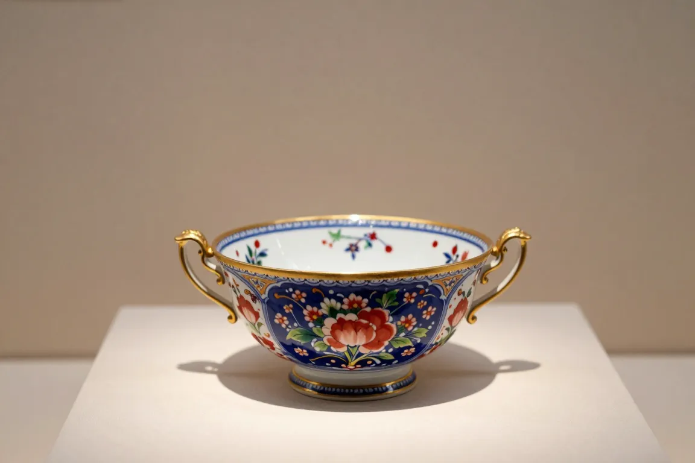

keramikk · 1800–1837 · også: Engelsk benporselen, Spode-benporselen, Regency-porselen
Benporselen med rik maling og tung forgylling til husene i regensen. Godset har omtrent 40 prosent benaske, så det er sterkt, hvitt og gjennomskinnelig, og det bærer dristige Imari-mønstre, botaniske blomster og brede gullbånd.

Kjerneidé
Benaske gir engelske pottemakere et sterkt, hvitt og varmt gods til en rimelig pris, og de dekker det med farge og gull for å passe til de rike rommene i regensen.
Designprinsipper
Bland omtrent 40 prosent brent benaske med porselensstein og kaolin til godset.
Brenn biskvien ved 1250 °C og glasuren ved omtrent 1050 °C, slik at godset blir hvitt og gjennomskinnelig.
Mal mønstre i Imari-stil: mørkeblått under glasuren, så rødt og gull over.
Mal blomster fra botaniske plansjer i brønnen på en dessertallerken, én blomst på hver tallerken.
Forgyll kanten med et bånd på 5 til 10 mm, og legg til en gulllinje rundt foten.
Modellér hankene som blader, snirkler eller dyrehoder, og forgyll dem.
Lag et dessertservise på 40 stykker eller flere, hvert med sin egen malte scene.